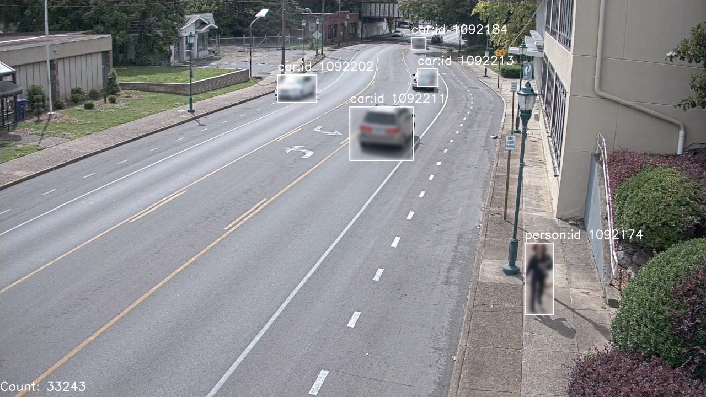
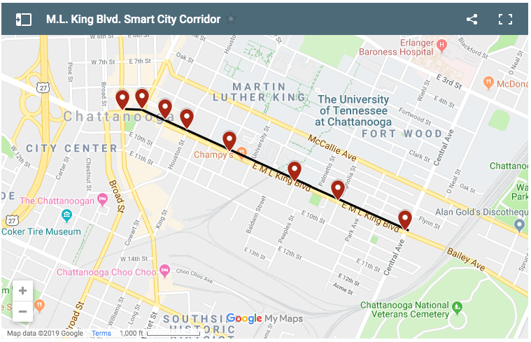
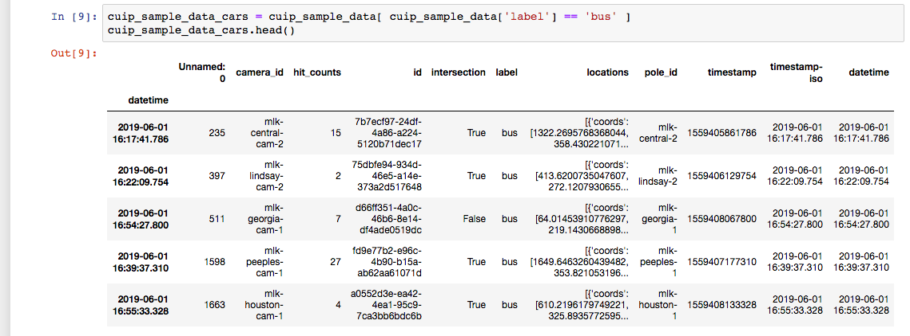

Announcing The CUIP 2019 Smart City Data Challenge
This year the Center for Urban Informatics and Prgoress (CUIP) program is putting on its second annual data science conference (link to 2018 conference). This year the 2019 CUIP conference is focused on analysis of smart city data and is also putting on a data modeling competition that ties into the conference focus with the theme:
"Predicting Urban Air Pollution Levels From Weather Data and Street Video Events"
Video: Example object detection (YOLO v2) video footage
from Broad Street in Chattanooga
The CUIP program has been steadily building out its smart city platform for data collection at the pole and wide scale data ingest into a data lake. Dr. Sartipi and UTC decided to release a portion of the CUIP data collected from the testbed to further engage the research community on the fruits of the data collection. To support the focus of the conference the data release is kicked off with the CUIP 2019 Smart City Data Challenge for anyone and everyone to participate.
Patterson Consulting (as a CUIP supporter) has been involved in advising on the infrastructure architecture along with design of the CUIP Smart City Data Challenge. This support falls in line with Patterson Consulting's long term support of regional research output and its correlation with regional economic growth and development.
What is the Data Challenge?
The 2019 Smart City Data Challenge is focused on predicting PM2.5 levels in the air from the recently open sourced CUIP 2019 Challenge Dataset. The CUIP program is interested in multiple domains related to smart city analytics, but this year they are focused specifically on how smart city's can be improved with sensor deployment across the city. One of the first applications of this sensor deployment is understanding how traffic can affect quality of life in a city, specifically traffic's impact on people's health.
The concept of the CUIP Dataset is largely drawn from the purpose and success of the ImageNet dataset. Machine learning research in any domain cannot move forward without good open datasets, no matter how exotic the applied machine learning methods are. To drive smart city application research forward it was concluded that the CUIP program needed to be a leader in building quality smart city datasets. Just like with the ImageNet dataset, the CUIP research group built a dataset and then created a competition and conference to get like-minded researchers in the same room to talk about the problem space.
For this data challenge we're looking to predict PM2.5 levels each day based on cars passing through the smart city corridor and local weather from the sensor stations in the corridor. If we can build a model to predict pollution levels at the intersection-level in an urban environment, we can build potentially build a more detailed pollution map of urban areas and better understand how our cities work. This contest is unique in how we're using both weather data and urban street level object detection data combined to predict pm2.5 levels where most competitions so far have used only weather data.
Similar Competitions
In recent years there have been similar competitions predicting pm2.5 levels from previous hours/days of weather data. Kaggle ran a competition in 2018 for predicting pm2.5 values based on weather in Chinese cities. Also in 2018 we saw the ACM SIG KDD competition focused on predicting "the PM2.5, PM10, and O3 concentration levels over the coming 48 hours for every measurement station in Beijing".
What is pm2.5?
PM2.5 is short hand for any atmospheric particulate matter (PM) that has a diameter of less than 2.5 micrometers. For reference this matter is about 3% the diameter of a human hair.Why is pm2.5 Dangerous in our Cities?
Studies in large cities have shown to be associated with respiratory system disease in humans.
From Wikipedia:
Further:“In 2013, a study involving 312,944 people in nine European countries revealed that there was no safe level of particulates and that for every increase of 10 μg/m3 in PM10, the lung cancer rate rose 22%. The smaller PM2.5 were particularly deadly, with a 36% increase in lung cancer per 10 μg/m3 as it can penetrate deeper into the lungs.[11] Worldwide exposure to PM2.5 contributed to 4.1 million deaths from heart disease and stroke, lung cancer, chronic lung disease, and respiratory infections in 2016.”
It stands to reason that better understanding air pollution beyond the granularity of the city-level has value to the citizens and government of any city.“Traffic congestion increases vehicle emissions and degrades ambient air quality, and recent studies have shown excess morbidity and mortality for drivers, commuters and individuals living near major roadways. Presently, our understanding of the air pollution impacts from congestion on roads is very limited. ”
Where does pm2.5 come from?
There are some natural sources of pm2.5 levels such as forest fires, agricultural burning, volcanic eruptions and dust storms. Our focus here is how a city can be impacted by human sources of pm2.5. These human-based sources include
- power plants
- motor vehicles
- airplanes
- residential wood burning
- construction sites
The CUIP Smart City Data Challenge Dataset
The intial idea for the dataset release was to provide researchers an easy way to work with smart city data such that they could experiment and come up with novel applications. Bringing software into the CUIP platform, while possible, is not as simple as "just working with data". From that perspective, we wanted to give the data community some data so they could get something to work with in their own time and potentially reference the data in their own research.
The best exemplar we had was how ImageNet (coupled with the rise of GPUs) helped drive huge gains in model accuracy for computer vision research. This gave us the idea of creating an "ImageNet for Smart City", and this is how the CUIP Smart City Dataset was born.
The base hypothesis was that early analysis showed pm2.5 levels on the street correlated over time with vechicles passing through the street. However, there were other factors in play such as:
- weather
- type of vehicle
- construction around the sensor pole
- time of day
Just like with understanding how cars move through an intersection can make traffic operations more efficient, we can better design and operate cities when we understand how pollution affects sections of our city. As car usage has increased in over-subscribed urban areas, we see their emissions significantly rise in relative contribution to city pollution. As cities become more complex with the rise of global population it is critical to measure and understand all aspects of how we operate cities.
This competition is based around further exploring how the main independent variable (vehicle object counts from video frame analysis) along with weather data can more accurately predict the pm2.5 levels during the day.
This is a compelling use of video frame detected objects becasue it potentially makes it far simpler to build fine-grained pollition maps of cities.
Going Beyond Just Cleaning Up the City
Finally, we'll note how the city has come full circle from being named infamously by Walter Cronkite as "America's Dirtiest City" on the evening news. To be fair, he wasn't wrong as the lead paragraph from the March 4, 1969 Chattanooga Times read:
"Chattanooga's particulate air pollution is ranked the worst in the nation for the period of 1961-65 in an 1,800-page publication on Air Quality Criteria for Particulate Matter just released by the Department of Health, Education and Welfare."
It's an inspiring story to see the city once labeled as the nation's dirtiest transform itself into being a city that is on the forefront of building next-generation smart city pollution maps.
Dataset Structure
The CUIP Smart City Dataset is divided into two major parts:
- Daily air quality data
- Object detections from video frames
The air quality data is collected from the Purple Air Sensor located at each intersection along the smart corridor. Each reading includes columns such as humidity and temperature. It also has the PM2.5 level for the same point in time along with other particulate types. Take a look at the dataset website to see all of the columns.
Releasing the dataset involved a few challenges, namely the limitation that CUIP was not allowed to release image data from any of the cameras on the smart corridor. With that restriction in mind, the CUIP program used open source computer vision models to produce object detections on the data and then save only the detected objects in their data lake internally.
The object detection data is in the other main directory in the dataset and contains daily object detections as they occured per intersection. The object detection data was more complex to release due to limitations around what information could be released. The CUIP program could not release the video data itself, so instead they decided to release the detected objects from the video frames. These object detections were produced with the YOLOv2 Convolutional Neural Network computer vision model along with some custom scene object tracking code developed by the CUIP program.
Graphed sample of object detection data per hour at each intersection.
We'll note that the YOLOv2 model has its tradoffs but coupled with the object tracking methods developed by the CUIP program it was able to achieve good accuracy. Given that the YOLOv2 object detections are consistently effective across all frames in all intersections, any missed detections or duplicated detections should normalize out in the input data normalization/standardization/vectorization process. Beyond these disclaimers, we'll also note that this is real-life data and a seasoned practitioner will realize that many times we must deal with data that needs to be cleaned up.
We consider having to deal with complex data to be part of the competition and we look forward to hearing the methods used by the top 3 teams during the conference on the winners panel.
Competition Rules
This contest is based around “Predicting Urban Pollution Levels From Street Video Events and Weather”.
The specific goal of the contest is to use 3 weeks of CUIP basic weather information and object detections to build a model to predict the pm2.5 level for each hour (top of hour) in a day (7am-7pm, top of the hour) for every intersection across 5 days.
Training Data
The training data will consist of 3 weeks of CUIP collected data containing:
- weather
- pm2.5
- vehicle object detections
Held Out Prediction Data
The held out data for the prediction task will contain:
- weather
- vehicle object detections
The prediction output will be for all 7 intersections from 7am-7pm (12 hours) on the top of hte hour for 5 days. This will be a prediction submission file containing 336 predictions.
Submitting an Entry
Teams can submit multiple times to the competition. Each submission will consist of a CSV file in the format:
date,time_hour,intersection_index,pm2_5_value
2019-06-01,7:00,1,100.0
2019-06-01,8:00,1,100.0
2019-06-01,9:00,1,100.0
2019-06-01,10:00,1,100.0
2019-06-01,11:00,1,100.0
...
Each team will save their entry in the above CSV file format and email it to [austin?@utc.org]
Evaluation Method
The evaluation metric will be Mean Square Error (MSE) across all predictions.
A leaderboard will list the top 5 entries / teams and will be updated twice a week (Tuesdays and Fridays) leading up to the conference.
Top 5 teams will have to send in model for confirmation once the competitions has ended.
Contest Deadlines
The deadline for model submission: Sept 6th, 2019.
Contest Winners and Competitors at the 2019 CUIP Conference
All teams who participate are invited to present a poster for their methods at the 2019 CUIP conference in Chattanooga, TN during the poster session of the conference.
The top 3 teams will be invited to be on the panel during the conference to discuss the dataset and their techniques for getting the best results.
Brief Overview of the CUIP Platform Architecture
The CUIP platform has stations along intersections down M.L.King Blvd in downtown Chattanooga, TN, as shown in the image below.
Each intersection sensor groups has:
- cameras
- LIDAR
- RADAR
- microphones
- python and pandas
- GPUs and TensorFlow
- Kubernetes and Kubeflow
R and Python Code to Get You Started
Some of the seasoned data scientists out there may jump right in and start downloading data to analyze with their favorite tools and methods. However, for our newer data scientist friends, we wanted to provide some sample data and an example notebook (hosted on Github) on how to work with the data in python with pandas. We hope this allows people who just want to learn more about the CUIP dataset challenge an easier way to work with the data in a friendly Jupyter notebook environment. In the image below we can see some operations being performed on the sample object detection data from the dataset.
 And then an R-based notebook example from James Long:List of Example Notebooks
List of pre-built notebooks to use the data:
- James Long (of R Cookbook fame) provided an R-based notebook for the competition
- Basic data loading python notebook from our github account
Even if you don't participate in the competition, it might be fun to play around with the data and see what you can learn about how traffic moves through MLK street in Chattanooge. We'd love to hear your stories at the competition at the coffee or poster sessions.
See You at the 2019 CUIP Smart City Conference
Map to the Edney Center.
Good luck to all participants in the 2019 CUIP Smart City Data Challenge. Come check out the winning team's methods at the 2019 CUIP Deep Learning Conference in Chattanooga, TN at the Edney Center on September 13th, 2019. Be sure to catch talks at the conference by companies such as:
- The Google Cloud Team
- Nvidia
- Ford